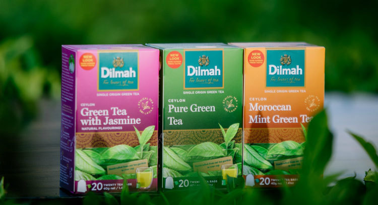
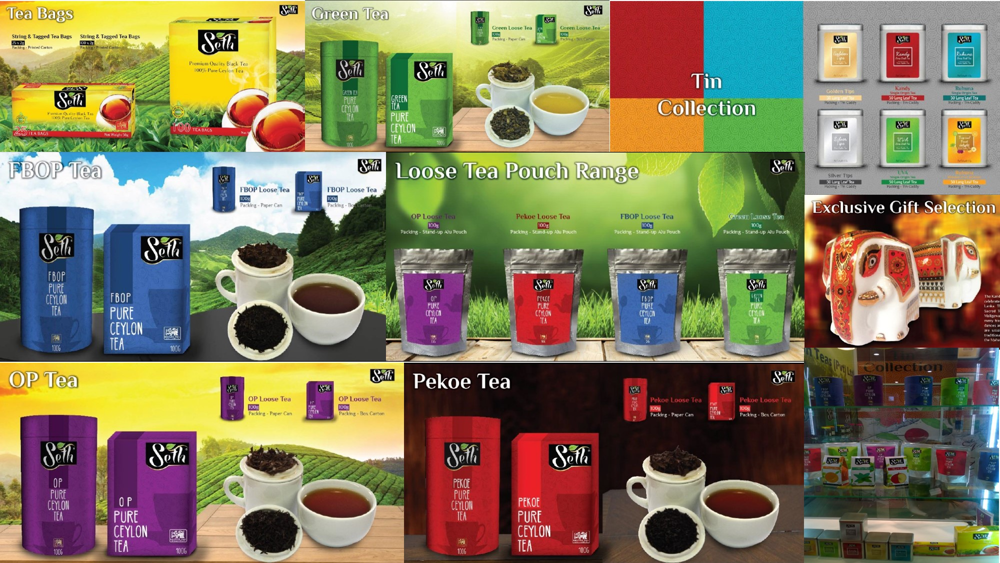
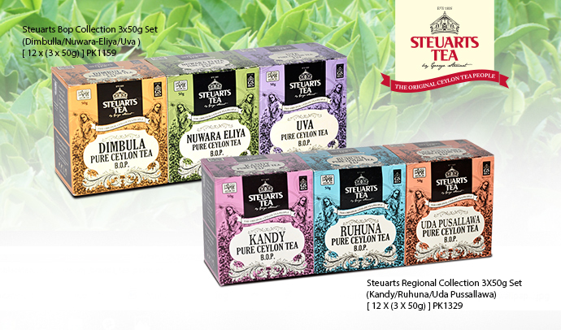
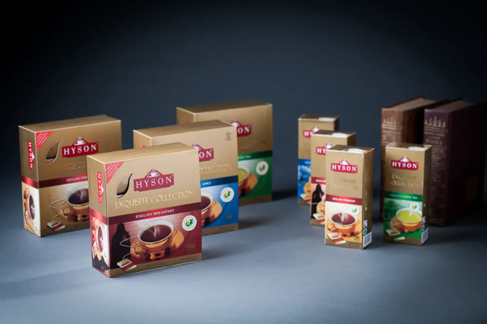

Sri Lanka Tea Vendor wants to give you nothing but it's best, so we partnered up with prestigious tea Manufacturers in Sri Lanka. Most of our Manufacturers Send their product oversees through our help. Our beloved partners are listed below.
Dilmah is one of the successful tea company in sri lanka. They were quite famous among local people in 90s and early 2000 because dilmah sponsered Sri lankan people's beloved Cricket Team, even though Dilmah currently doesn't sponsor to Sri lankan cricket team.Dilmah is the main sponser to the development of blind cricket in Sri Lanka and dilmah is planning on sponsoring National Blind Cricket Team participating in the Blind Cricket World Cup held in Dubai from 7 to 25 January.
Dilmah ceylon tea company plc is founded by Merrill J.Fernando in 1950s, it took nearly four decades and in 1988 Merrill j.Fernando launched his own brand-Dilmah. The founder had a unique vision he wanted to offer his customers finest tea and that pledge is fullfilled by dilmah's garden fresh unblended clean tea. Now Dilmah is one of the most popular Tea Manufacturers of the world
Jafferjee and sons is one largest tea exporters in Sri Lanka who transport pure ceylon tea to 36 countries. J.A.S anually exports roughly 17.5 million kilograms in tea which costs about 90 million USD.
Jafferjee and sons company is founded in 1984 by Ibrahim Jafferjee. Even though it's not old as our others partners, J.A.S is one of the most successful tea manufacturers in Sri Lanka. J.A.S became popular in the local community because of their fresh tea and their perfecct blend. currently J.A.S is run by Mr.Ibrahim Jafferjee's sons and their family.
George Steuart Teas is known as one of Sri Lanka's oldest Tea Manufacturers Eventhough George Steuart Teas is not a Local Sri Lankan company, George Steuart Teas has been in the tea business since 1835. George Steart Teas is one of the Sri Lanka’s largest Tea businesses. They roughly grows about 30 million kilograms in tea which is worth roughly 120 million USD.
George Steuart Teas is a company that was founded in Sri Lanka when Sri Lanka was under British Empire. George Steart Brothers bought an abundance of farming land when during that time. George Steuart Teas was one of the main companies that stayed behind even after Sri Lanka got Independance.
Empire Teas (Pvt) Ltd is also one of Sri lanka's main exporter of quality Ceylon Tea. Empire Tea private limited grows and exports over 14 million kgs ,Empire tea has a large collection of blends for their users to choose from, Since its beginning, Empire Teas has been successful in marketing and exporting their tea products around the world, Empire tea export their ta primarily to the Western countries, Far East, Middle East, Russia & CIS, USA and other countries in Eastern Europe.
Empire tea is one of our youngest partners. It was founded in 2008 by Amal jayawardhana and is currently one of the famous tea manufacturers in Sri lanka. Empire tea doesn't grow their own crops. but buys the small tea which was grown by small tea farms.
Picking The Perfect Tea can be exhausting and hard. Click one of the buttons below to learn how to pick high-quality tea by yourself using simple techniques.


Name : Musharraf Azhar
Address:312,paper Street,colombo-13
Phone:0712428364 / 0113748324